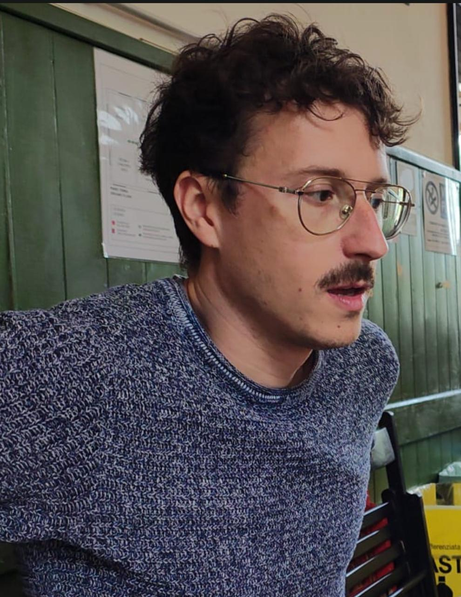

Adult Film Entertainer • Bologna, IT
Where passion meets craft. One take at a time.
Discreet • Professional • Bologna-based
Matteo applies the same slow-cook patience from his nonna's ragù recipe to every single scene. Low heat, long finish.
The only adult performer who can name all 40km of Bologna's portici. On set trivia night, he always wins.
Those gold wire rims are contractually mandatory. Directors have tried. Matteo doesn't budge. Iconic.
Before every shoot, Matteo recharges with piadina and Aperol. It's not a ritual, it's a science.
Refuses to relocate. All shoots within Bologna city limits. "If I can't walk there, I don't perform there."
Requested jazz sax instead of the standard soundtrack once. It stuck. Now every Giovanardi scene has a sultry solo.